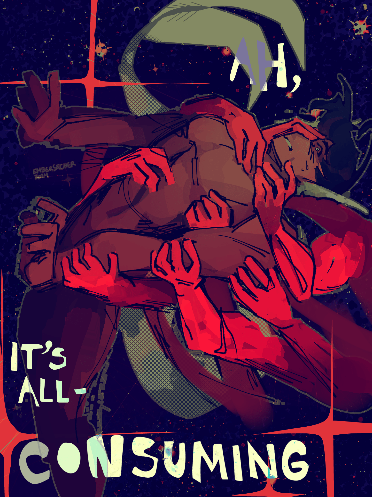

consuming//overwhelming
creation date: aug 17
characters featured: enzo
TITS JUMPSCARE ¡¡¡AHHHH!!!
ok so there's this wonderful artist named qae0 on twitter dot com who made an elegant and beautiful poster of their OC leaning back and being held by phantom hands and i tried to copy it but the vibe is. so totally lost. so totally gone.
that being said, i wish i could say more about this one. visually, it is my favorite artwork from this batch but i really did just freehanded most of it..... i used a wet square brush and shaded directly on top of the flat colors and the lineart itself was just a cleaned-up sketch. visuals slap indescribably yet i wish i didn't have so many mixed emotions about the rest of the piece. the pose isn't even that bad but i feel so embarrassed by this subject matter LOL. this is straight up a pinup. okayyyyy